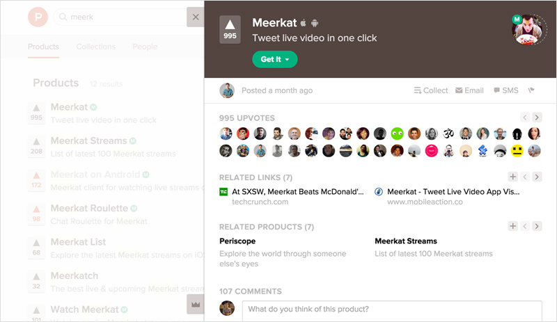
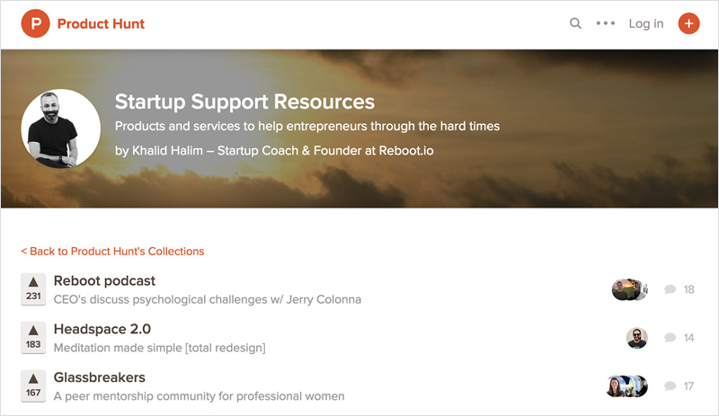
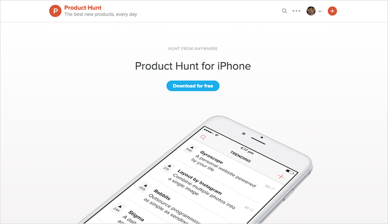

Heroku App Builds Community Around a Passion for New Tech Products
Product Hunt Makes it Fun to Discover and Share New Products
The joy of discovery is infectious. When someone you know recommends a new product they’ve just tried, you pay attention. Their excitement can inspire you to try it yourself, and if you like it too, you’ll pass along your own enthusiasm to others. With tech products, sharing a simple link with friends and followers often means they can instantly access your find — and the word can spread like wildfire. Such viral awareness is the dream of product makers and marketers alike.
Geeking Out on New Products
The team at Product Hunt had a personal passion for technology products and loved to find and share new products with friends. They quickly realized they were not alone. What began as a pet project in late 2013 rapidly grew into a funded startup that has built out their vision into a deeply engaging community of like-minded new product makers, hunters, and enthusiasts. On their web or iOS app, product lovers can share their finds or discover hundreds of new products that have been curated by the community at large. The company is continually working on new ways to personalize the experience.

From Zero to Sixty on Heroku
Product Hunt’s web app was first deployed to Heroku because the founders wanted to launch quickly and get straight to the fun of building their community. They have since deployed a native iOS app and API, also running on Heroku. They stay on Heroku because it frees them to focus on their product without the need to dedicate precious resources to devops or system administrators. The engineering team can concentrate fully on evolving the user experience, adding new features and functionality, and driving engagement. As their usage grows, Heroku allows them to simply scale up or down to match their traffic patterns, user growth, and associated app management tasks.
We love Heroku because we don’t have to worry about bringing up servers, dealing with our own images, or firewalls. We just want to focus on our product.
Mike Coutermarsh, Software Engineer, Product Hunt
Throughout development, the Product Hunt team has appreciated many of Heroku’s native features and tools that help streamline their experience. They built their tech stack using Ruby on Rails and Javascript, use Heroku Postgres for their database needs, and leverage a host of Heroku Add-ons to extend functionality beyond the run-time platform. Add-ons include: RedisToGo to manage their Redis infrastructure, MemCachier for distributed memory caching, RabbitMQ Bigwig for cloud messaging, Papertrail for logging, and New Relic APM for application performance monitoring.

The Heroku Add-on Marketplace makes it easy for us to discover and add new services to our app as we introduce new functionality.
Ryan Hoover, Founder, Product Hunt
One of their favorite features is Heroku Fork, which lets their developers easily spin up new instances of their apps and create fully-functional testing and staging environments with a single command, saving the development team significant time and resources that they otherwise would have spent setting up these environment themselves. With Fork, their app’s add-ons, Postgres data, configuration variables and other resources are copied as well. They love how easy it is to provision and de-provision environments as needed. The Dashboard gives them one cohesive interface to manage all their apps and as well as application-level metrics to help investigate and diagnose issues.
We’re big fans of the new Heroku Dashboard with metrics that let us easily monitor and fine-tune the performance of our apps. It saves us a lot of time.
Mike Coutermarsh, Software Engineer, Product Hunt
App Experience
Product Hunters enjoy a beautifully simple yet sophisticated user experience. New users sign up with their Twitter login, and their Twitter followers already on Product Hunt are added to their account. Users then can follow other like-minded hunters, to help them discover products most interesting to them.

Those who have made or found a new product can easily submit it for consideration to the company’s moderation team. A backend tool allows staff to review submissions, approve or reject them, and add notes or edit tag lines and links. An algorithm automatically includes the product maker and related links. Products are curated by the community - ranked by votes and popularity with top products featured on the home page.
Product Hunt’s extensive community engagement features help to further personalize the experience. Users build a profile that tracks their product submissions, votes, personal collections, and status as a product maker, hunter, or commentator. Makers can also offer special discounts or other deals on their new products to the Product Hunt community.
The company offers even more ways to discover products beyond their apps. Meetups in cities around the world provide a fun opportunity to hang out with fellow product-lovers in person. A weekly podcast offers discussions with makers, investors, and others in the startup community. A Chrome extension is also available for users who want a daily digest of products in the browser’s “new” tab. And a Product Hunt API is available for developers who want to integrate Product Hunt into their own app.
Sharing the joy of discovery has never been more fun.
More Stories


Have a question? Give our sales team a call: +1 (866) 278-1349.